Rayman a eu une vie avant de finir second rôle dans des party-games ayant pour star des lapins crétins, cette vie c’est celle de trois superbes jeux (je ne compte pas les spin-offs médiocres) qui arriveront à chaque fois à renouveler l’attraction des joueurs. Dans ce premier opus, Rayman n’est encore qu’en 2D mais son monde n’en est que plus enchanteur, voyons ce qu’il s’y trame.
Dans un monde où quasiment tout les êtres vivants semblent dépourvus de membres, l’infâme Mister Dark se met à kidnapper les protoons qui forme l’équilibre du monde, heureusement Rayman est là pour mettre en échec les plans de cet être maléfique. Saurez-vous mettre en déroute son armée et libérer les protoons qui ont été enlevés ?
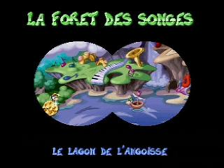
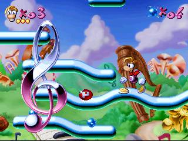
Rayman est un jeu d’action/plates-formes. Le panel des mouvements de Rayman est plutôt faible en début d’aventure : en effet il ne saura que sauter et… faire la grimace. Heureusement la fée Pétunia lui donnera très vite des pouvoirs lui permettant de s’accrocher aux rebords, de lancer son poing sur ses ennemis, de faire l’hélicoptère avec ses cheveux ou encore de sprinter, il est également possible de se baisser et de ramper.
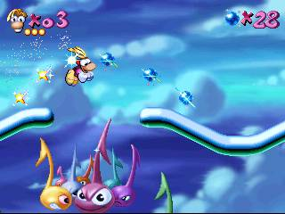
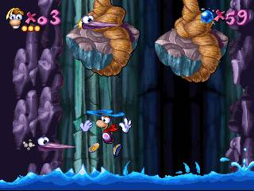
Le gameplay est donc relativement étoffé d’autant plus qu’il y aura pas mal de phases spéciales où il sera possible de voler, de chevaucher un moustique ou encore de se servir du poing de Rayman comme d’une lanterne dans un endroit vidé de toute lumière.
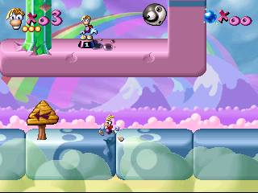
Au cours des niveaux il sera également possible de trouver des power-ups augmentant la puissance ou la portée du poing ou encore d’augmenter la vie de 2 points (sachant qu’il y a 3 points de vie par défaut).
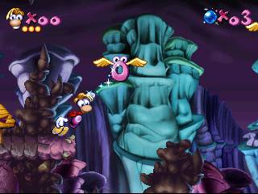
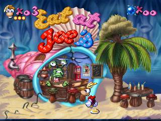
Mais même comme cela le jeu est difficile :
Le nombre total de Tings (boules bleues à collecter qui permettent d’avoir une vie quand on en a ramassé cent) revient à zéro dès qu’on meurt.
Les vies cachées dans les niveaux ne s’obtiennent qu’une fois.
Les phases de plates-formes sont parfois délicates et les anneaux volants qui permettent de se balancer comme des lianes sont aussi délicats à utiliser : tantôt on loupera alors que notre poing sera passé à quelques millimètres de l’anneau, tantôt, et c’est ce qui arrive le plus fréquemment, Rayman lancera son poing deux fois sans qu’on comprenne trop pourquoi. Cela aura pour effet de nous décrocher et de nous faire perdre une de nos si précieuses vies.
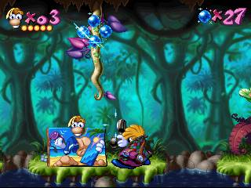
Mais le véritable problème c’est le système de continues, en effet 5 continues nous sont accordés en début de partie pour faire le jeu entier, comprenez qu’une fois perdu un continue il nous est impossible de le récupérer, il est d’ailleurs impossible de sauter l’écran des continues directement pour obtenir un Game Over ce qui ne nous encouragera pas à les économiser. Il est aisé de comprendre pourquoi Ubisoft à placé des codes pour augmenter son nombre de vies ou de continues ou encore que la mouture DSi sortie il y a peu augmente sensiblement le nombre de vies et de points de vie par défaut.
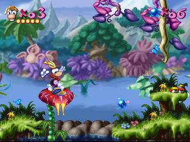
La 1re partie du 1er niveau est une claque visuelle, l’objectif commun des jeux 2D qui est de nous faire progresser dans des dessins animés vivants est ici quasiment atteint
Au niveau graphique le jeu montre toutes ses capacités au début du 1er niveau. Les détails sont en pagaille (fleurs qui dansent, champignons qui sautent, etc.), les niveaux sont composés de nombreux plans différents, l’animation est sans faille et les lieux sont colorés et enchanteurs. Même si les autres tableaux ne sont pas aussi travaillés, il est impressionnant de voir les capacités des 32 bits en terme de 2D. Quand on voit ça, il est dommage de constater que si peu de jeux aient tenté l’expérience de la 2D intégrale là où la 3D était en pleine expansion. Pour le reste les niveaux sont vraiment variés et chaque monde a un thème différent (forêt, musique, grotte, bureau d’écolier, etc.), on s’amuse de bout en bout et seule la difficulté du titre pourra susciter les prémices de la lassitude.
Le jeu a une durée de vie plus que convenable pour un jeu de ce type surtout si vous cherchez à le finir honnêtement.
Le petit coup de gueule :
Une fois traversé les niveaux une première fois et battu le dernier sbire de Mister Dark on voit une courte _cutscene_ où on nous incite à nous dépêcher d'arriver au dernier niveau, simplement sur la carte du monde aucun chemin ne permet de nous y rendre, absolument aucune indication ne nous est donnée, on se retrouve comme un con à chercher ce qu'il faut faire, la solution parait évidente mais on n'ose pas l'imaginer : il faut finir le jeu à 100% en trouvant et en cassant toutes les cages contenant les protoons (ce qui augmente sensiblement la durée de vie), certaines cages étant cachées vicieusement et n'apparaissant que quand on est placé à certains points (c'est d'ailleurs une caractéristique étrange de ce Rayman que de faire apparaître des bonus ou des éléments d'interaction après s’être rendu à certains endroits). On a donc ici une obligation de compléter le jeu entièrement avant de pouvoir le finir ce qui ne pose pas tant de problèmes vu qu'on l'aurait de toute façon fait pour obtenir une vraie fin par exemple, le problème dans ce cas c'est le manque d'information pour y parvenir.
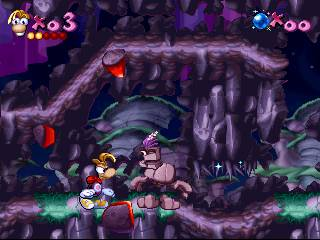
Le magicien vous permettra également de prolonger un peu la durée de vie du jeu. Il est caché dans certains niveaux et vous permettra de participer à une épreuve chronométrée si vous le trouvez. Si vous réussissez une fois vous obtiendrez une vie, pour les fois suivantes il conservera votre meilleur temps, ce qui augmente un peu la rejouabilité.
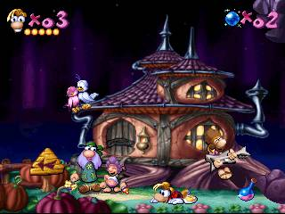
Si vous cherchez un jeu de plates-formes 2D réussi sur 32 bits Rayman est ce qu’il vous faut. Il réussit sur tous les plans sauf sur celui de sa difficulté légèrement excessive, conséquence d’un gameplay trop sensible. Mais ce défaut peut être contourné en trichant, alors pourquoi se priver d’un titre aussi culte ?
Développeur : Ubisoft
Date de sortie : 1995
Article publié originellement sur Gamekult le 30/09/2012